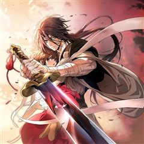

액션 웹툰 추천 TOP 30
싸움·배틀 이야기를 좋아한다면 이 목록부터 보세요. 네이버웹툰·카카오웹툰·레진코믹스에서 조건에 맞는 작품 422개 중 인기 순으로 30개를 골랐어요. 인기 TOP 3: 외모지상주의, 관존 이강진, 신의 탑
2026-10-07 기준 · 성인 작품 제외
내 취향으로 더 좁혀서 추천받기 →-
1
 네이버웹툰
네이버웹툰외모지상주의
못생기고 뚱뚱하다고 괴롭힘을 당하며 루저 인생만 살아온 내가 잘생겨졌다는 이유로 인싸가 됐다. 어느 날 자고 일어났더니 갑자기 완벽한 외모와 몸을 지닌 사람이 되어 깨어난다면?
액션사이다학원액션소년물참교육네이버웹툰에서 보기 → -
2
 카카오웹툰
카카오웹툰관존 이강진
미친놈인가? 아니면 흔한 관심종자인가? 사람의 다름을 이해 못 하는 제자 이강진. 그리고 그걸 이해시켜주고자 하는 스승 곽노. 두 사제師弟의 따뜻한 휴먼스토리.
액션성장물카카오웹툰에서 보기 → -
3

-
4
 네이버웹툰
네이버웹툰싸움독학
힘없고 가진거 하나 없이 맞고만 살던 나였는데... 우연히 비밀의 뉴튜브를 발견하게 되고 갑자기 떼돈을 벌었다.
액션학원물인플루언서소년왕도물네이버웹툰에서 보기 → -
5
 네이버웹툰
네이버웹툰참교육
무너진 교권을 지키기 위해 교권보호국 소속 나화진의 참교육이 시작된다! <부활남> 채용택 작가 X <신석기녀> 한가람 작가의 신작!
액션사이다학원액션자극적인사회고발네이버웹툰에서 보기 → -
6
 카카오웹툰
카카오웹툰대사형 선유
삼류 낭인 곽노의 손에 거둬진 아이들. 사제관계를 맺고 아이들은 어설프게나마 무공과 보법 수련을 하며 각자의 꿈을 꾼다. 먹고살기 위해 곽노는 늘 자리를 비워야 했고, 아이들 중 맏이인 선유는 사제들을 돌봐야 한다. 그는 대사형大師兄이다.
액션눈물샘자극가족카카오웹툰에서 보기 → -
7
 네이버웹툰
네이버웹툰더 복서
재능있는 복서를 찾던 전설적인 트레이너 K는 기묘한 소년을 발견한다. 그의 충격적인 재능은 과연 축복일까, 저주일까?!
액션몰아보기명작격투기힐링네이버웹툰에서 보기 → -
8
 카카오웹툰
카카오웹툰검술명가 막내아들
진 룬칸델 대륙 최고의 검술명가, 룬칸델의 막내아들 룬칸델 역사상 최악의 둔재 비참하게 쫓겨나 허무한 최후를 맞이한 그에게 다시 한 번 기회가 주어졌다. “너는 이 힘을 어떻게 사용하고 싶더냐?” “저를 위해 사용하고 싶습니다.” 전생의 기억과 압도적인 재능, 그리고 신과의 계약 최강…
액션회귀카카오웹툰에서 보기 → -
9
 카카오웹툰
카카오웹툰군림천하
"너만은 꼭 군림천하 해야 한다!” 그 한마디로 진산월의 운명이 결정됐다. 스물세 살, 그는 종남파의 장문인이 되었다. 남은 이들은 단 8명의 제자뿐. 한때 천하제일을 꿈꿨지만, 지금은 명맥만을 잇는 문파. 사부의 유지를 위해, 살아남기 위해— 진산월은 비정한 강호로 나아간다.
액션자극적인성장물카카오웹툰에서 보기 → -
10
 네이버웹툰
네이버웹툰김부장
“제발 안경 쓴 아저씨는 건들지 말자…” 오직 자신의 딸 '민지'를 위해 특수요원직을 관두고 평범함을 선택한 가장 김부장. 그러던 어느 날 민지가 소리소문 없이 사라지고, 김부장은 자신을 감시하는 국가를 적으로 돌리면서까지 딸을 찾아나서기 시작하는데... [외모지상주의], [싸움독학]…
액션사이다자극적인시리어스가족네이버웹툰에서 보기 → -
11
 카카오웹툰
카카오웹툰비뢰도
홀로 길러주신 아버지를 잃고 10세에 혈혈단신이 된 비류연. 조각가였던 아버지에게 배운 기술로 부모님의 조각상을 만들어 두 분 묘 앞에 세워뒀더니, 지나가던 노인이 그걸 보고는 천하제일 무공을 가르쳐주겠다고 한다. 수상쩍지만 달리 갈 곳도 없고, 그럴듯해 보인 무공에 혹해 비류연은 그…
액션개그사이다캠퍼스카카오웹툰에서 보기 → -
12
 네이버웹툰
네이버웹툰입학용병
어린 시절 비행기 추락 사고의 유일한 생존자 유이진. 살아남기 위해 용병으로 살아가던 유이진은 10년 후, 가족이 있는 고향으로 돌아왔다.
액션사이다학원액션우정가족네이버웹툰에서 보기 → -
13
 카카오웹툰
카카오웹툰레드스톰 - 왕의 귀환
피에 젖은 사막. 붉은 사막을 용납할 수 없던 한 소년. 소년은 사막의 무신이 되어 사막을 구하지만 이제는 세계가 피에 젖으려 한다. 무신은 이제 사막을 넘어 세계를 구하려 한다. “4년 만에 돌아온 그로우, 왕의 귀환. 이제는 사막에서 전쟁을 보여줘야 할 때다.”
액션성장물카카오웹툰에서 보기 → -
14
 네이버웹툰
네이버웹툰스터디그룹
우등생을 꿈꾸는 최강 소년의 고교액션활극. 공부를 잘 하고 싶지만 애석하게도 싸움 실력에만 재능이 몰빵된 고등학생 윤가민. 똥통학교 유성공고에서 스터디그룹을 만드는데…. 그와 스터디 멤버들의 (진짜로) 피튀기는 입시이야기!
액션입시블루스트링드라마&영화 원작웹툰힘숨찐네이버웹툰에서 보기 → -
15
 카카오웹툰
카카오웹툰무당기협
무림 사파의 수장인 혁련무강은 죽기 직전 불로초를 삼킨 후 눈을 떠보니 무당파 도동의 몸에 빙의되었다. 예전에 본인이 붕괴 직전까지 몰고 갔던 무당파에서 '진무'라는 이름의 도사로 다시 살게 된 그는 무당의 '양의신공'을 전수받기 위해 애쓰다 보니 뜻하지 않게 무당이 부흥하는데...!
액션사이다빙의카카오웹툰에서 보기 → -
16
 네이버웹툰
네이버웹툰약한영웅
“비겁하다…? 애초에 동등한 시작이 아닌데... 체급도 쪽수도 안 맞잖아- 이 X끼들아!!” 선천적으로 약한 소년이 상대보다 몇 수 앞을 예측하는 심리전과 지형지물을 이용하고, 도구로 살벌하게 끝장내는 파이터로 성장한다. 이제 그의 또 다른 이름은 '은장백사'다.
액션드라마&영화 원작웹툰힘숨찐학원물네이버웹툰에서 보기 → -
17

-
18

-
19

-
20
 네이버웹툰
네이버웹툰퀘스트지상주의
[외모지상주의], [싸움독학], [인생존망]과 세계관을 공유하는 작품! 공부, 싸움, 외모. 뭐 하나 잘난 것 없는 평범한 고등학생 ‘김수현’의 눈앞에 갑자기 퀘스트창이 나타났다! 첫 번째 퀘스트, [엄마한테 사과하기]를 완료한 수현은 보상으로 키가 3cm 커지게 되는데! 퀘스트 엄청…
액션사이다집착녀현대게임네이버웹툰에서 보기 → -
21
 네이버웹툰
네이버웹툰일렉시드
<노블레스> 손제호 작가와 <소녀더와일즈> 제나 작가가 만났다! 고양이 몸에 깃든 각성자 카이든과 각성능력을 숨겨온 고등학생 지우 러블리 2인조의 액션 판타지
액션이능력배틀아카데미물세계관네이버웹툰에서 보기 → -
22
 카카오웹툰
카카오웹툰로그인 무림
세상의 경계인 게이트에서 몬스터 사냥을 하는 헌터들이 잘 먹고 잘 사는 시대. 주인공 진태경은 최하위 헌터라 벌이가 시원찮다. 어느 날, 낡은 VR 게임기를 줍게 되고 접속하니 무림의 세계가 펼쳐진다. 우여곡절 끝에 현실로 돌아온 태경은 무림에서 얻었던 힘이 현실에서도 그대로 남아있음…
액션개그서스펜스게임판타지카카오웹툰에서 보기 → -
23

-
24
 카카오웹툰
카카오웹툰픽 미 업!
그 누구도 던전의 끝까지 오르지 못한 극악의 난이도를 자랑하는 모바일 가챠 게임 <픽 미 업!(Pick me up!)> 마스터 오브 마스터라 불리는 세계 랭킹 5위의 마스터 '로키'는 던전을 깨던 중 정신을 잃게 된다. 깨어나 보니 레벨도 1, 등급도 1성인 <픽 미 업!> 속 영웅…
액션사이다게임판타지카카오웹툰에서 보기 → -
25
 네이버웹툰
네이버웹툰초인의 시대
지구에 근원 모를 괴물들이 출현하고 그들을 제압하는 '초인'들 또한 등장한다. 정체불명의 괴물과 초인, 바야흐로 '초인의 시대'가 도래한다!
액션액션판타지현대소년물판타지네이버웹툰에서 보기 → -
26

카카오웹툰무신귀환록
그 누구도 맞설 수 없는 최흉의 인재(人災), 무극신마, 단우현. 악행으로 인해 봉인되고 천 년 후. 천 년이라는 시간은 단우현에게서 살심을 없애기에 충분했다. 변해버린 세상, 아는 사람이라고는 아무도 없는 고독, 남은 것은 허탈함과 공허함 뿐. “바람이 흐르듯 세월도 흐르는구나. 정…
액션사이다정치카카오웹툰에서 보기 → -
27
 네이버웹툰
네이버웹툰44교시 생존수업
갑자기 세상에 ‘검은 원’이라 불리는 구멍들이 생겨나기 시작했다. 검은 원은 미스테리 그 자체. 생긴 원인도, 내부에 뭐가 있는 지도 밝힐 수 없었다. 그저 지금까지 검은 원에 빠진 후 돌아온 사람이 단 한 명도 없다는 걸 빼고. 어느 날 주인공 도윤의 학교에도 검은 원이 생겨났다.…
액션비쥬얼쇼크학원액션스릴러서바이벌네이버웹툰에서 보기 → -
28

-
29
 카카오웹툰
카카오웹툰갓 오브 블랙필드
"Who am I?" 프랑스 외인부대의 전설 '강찬'! 아프리카 전장에서 그를 상대한 자들은 공포와 경외를 담아 '갓 오브 블랙필드' 검은 땅의 신이라 불렀다. 하지만 수니파 추종 세력 SISS의 수뇌인 마살란 사살 작전에 투입된 강찬은 배후에서 날아든 의문의 총알에 전사하게 되고,…
액션서스펜스전쟁카카오웹툰에서 보기 → -
30
 네이버웹툰
네이버웹툰괴력 난신
살인에서 삶의 즐거움을 느끼는 '겸살귀', 정(正). 대 연목검장의 셋째공자 목경운과 똑같이 생긴 얼굴을 가졌는데... "나의 대역이 되어라. 그러면 옥에서 나갈 수 있게 해 주마." "그 기회. 제게 주시겠습니까?" '촤악-!!!' 셋째공자를 죽여버린다. 그리고 본인이 '진짜'가 되…
액션레드아이스 스튜디오천마세계관오컬트네이버웹툰에서 보기 →